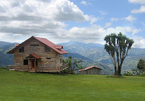

Swiss Chalet: is a type of building or house, native
to the Alpine region in Europe, made of wood, with a heavy, gently sloping
roof with wide, well-supported eaves set at right angles to the front of
the house. "Click on spot to open wikipedia article"